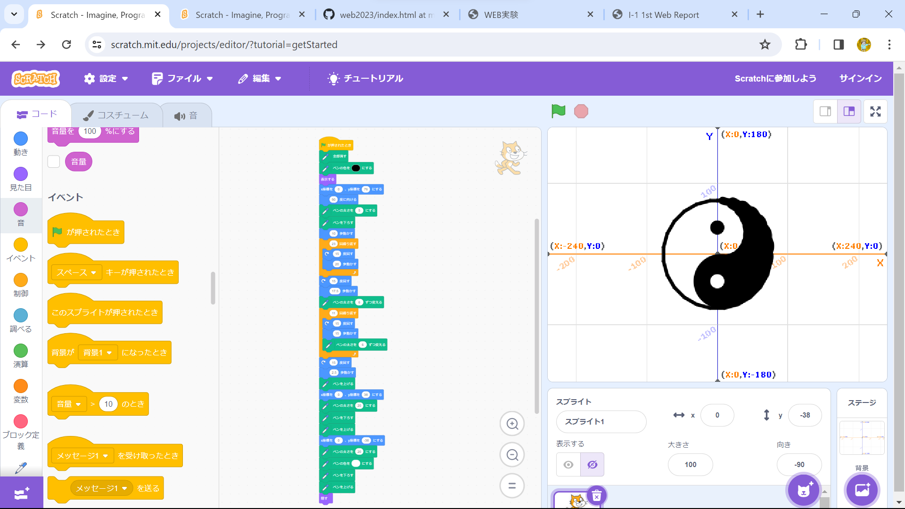

1週目のレポート ： 公大高専１年実習I-1
2B班40番 蜜柑教(狂)
第1週目
1-1 サイエンスアート

1.内容
Scratchを使って線を書くプログラムを自身で構成し、それを記録・保存する
2.感想
数値を微調整しても、思ったように線が描けずかなり苦戦した。
少し強引にではあるが、何とか書きたい線を描くことができた。
1-2 ゲーム
1.内容
Scratchを使ってネコを移動させて、落ちてくるチェックマークを掴むプログラムを指示に従って生成し、それを記録・保存する
2.感想
指示通りに作ったが、もっとよくできると思い、保存もせずに改造してしまった。
はじめは思った通り動かせずに苦戦したが、思った動きをさせるためのプログラムを思いつき、何とか完成させることができた。
1-3 ホームページ作成
私のホームページ
1.内容
GitHubを使ってHomePageを作成し、インターネットに公開する
2.感想
どのプログラムがどのような挙動をするかを予想し、それをコピー&ペーストしてどのように反映されるかを実験するのは楽しかった。
ただ、予想外の挙動をして危うく元に戻せなくなる可能性もあったため、慎重に進めた。